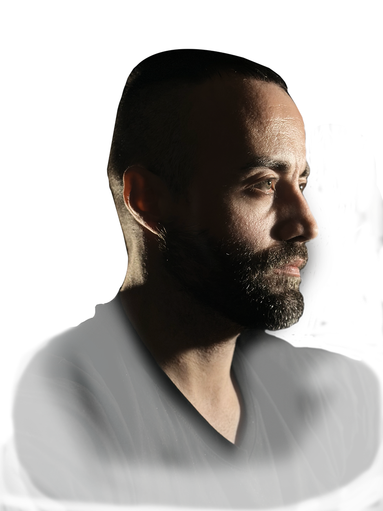

Who’s behind the work
Hi!
Your presence is an honor for me. My name is Bojidar, a multidisciplinary designer specializing in marketing and web design.
I have successfully completed projects with tangible results in the set objectives.
In short
Skills meet curiosity
7+years of experience in creation
UI · WebInterfaces and websites
MarketingSEO optimization, Google Ads, Meta, social media, print, packaging and brand identity
Photo · SketchPersonal interests that feed the work
I combine my professional skills with interests in photography and sketching because to do something in the best way, you need to understand the principles.
Prototype · text and portrait from bojidar.webflow.io/about